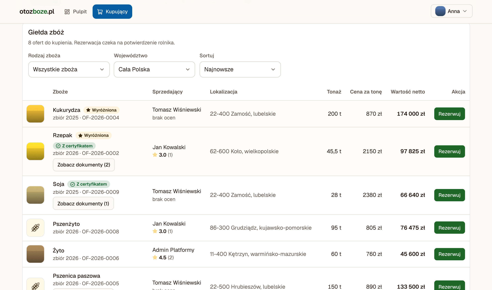
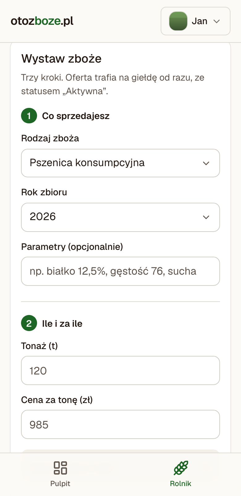
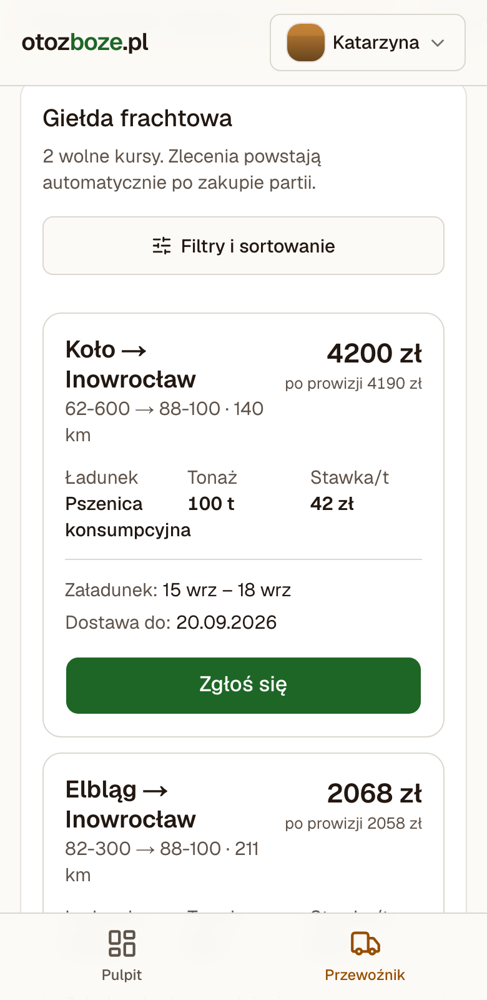
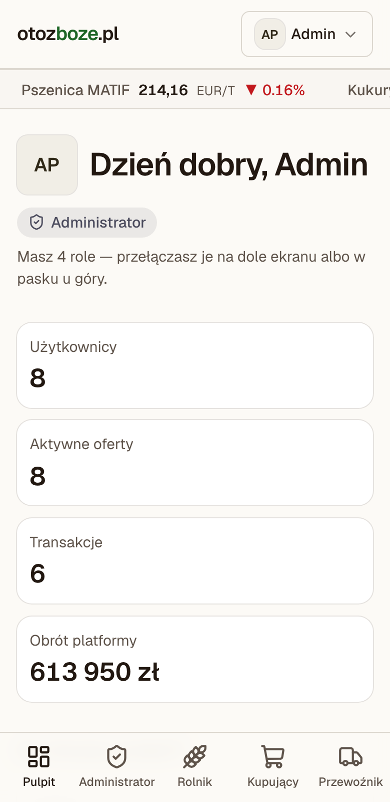

Giełda zbóż B2B · Polska
Od pola do młyna,
bez pośrednika w środku.
Przez czterysta lat zboże z polskich pól płynęło Wisłą do Gdańska, a cenę ustalały trzy strony: ten, kto zasiał, ten, kto kupował, i ten, kto wiózł. otozboze.pl sadza je z powrotem przy jednym stole — tym razem na ekranie telefonu w kabinie ciągnika.
Skąd to się bierze
Polska rosła na zbożu
Zboże nie jest w Polsce jednym z wielu towarów. Jest tym towarem, wokół którego przez stulecia układało się wszystko inne: granice majątków, kalendarz roku, drogi, miasta portowe i pieśni śpiewane po żniwach. W XVI i XVII wieku Rzeczpospolitą nazywano spichlerzem Europy — żyto i pszenica z Mazowsza, Wielkopolski i Kujaw karmiły Amsterdam, Antwerpię i pół kontynentu.
Ten handel miał swoją drogę i swoich ludzi. Ziarno zsypywano do szkut i galarów, płaskodennych łodzi, które flisacy spławiali Wisłą aż do Gdańska. Tam czekała Wyspa Spichrzów — dzielnica zbudowana wyłącznie po to, żeby przechowywać zboże, z budynkami nazywanymi jak żywe istoty. Cena rodziła się w rozmowie: rolnik znał swoją partię, kupiec znał rynek, flis znał trasę i porę wody.
Rytm roku wyznaczały żniwa. Dożynki, najstarsze polskie święto plonów, do dziś kończą się wieńcem z kłosów wręczanym gospodarzowi. Chlebem i solą wita się gościa w progu. W 1924 roku Władysław Reymont dostał Nagrodę Nobla za Chłopów — powieść, której osią jest po prostu cykl pracy na roli: jesień, zima, wiosna, lato.
„Nie rzucim ziemi, skąd nasz ród” Maria Konopnicka, „Rota”, 1908
Trakt wiślany
Spichlerz Europy
Polskie zboże staje się jednym z głównych towarów eksportowych kontynentu. Gospodarka folwarczna układa się wokół jednego pytania: ile ziarna spłynie w tym roku do portu.
Flisacy prowadzą ziarno do morza
Wisła jest autostradą towarową. Flisactwo staje się zawodem z własnym prawem, gwarą i obrzędem, a trasa spławu — pierwszą polską infrastrukturą logistyczną.
Wyspa Spichrzów
Setki spichlerzy w jednym miejscu: magazyn, giełda i bank w jednym. Tu partia zmienia właściciela, a jakość ziarna decyduje o cenie.
Dożynki i wieniec z kłosów
Święto plonów przetrwało rozbiory, wojny i zmiany ustroju. Kłos w polskiej kulturze ludowej znaczy dostatek, ciągłość i to, że rok się udał.
37 milionów ton rocznie
Polska jest największym producentem pszenżyta w Unii Europejskiej i jednym z czołowych producentów żyta. Zboże nadal jest tym, na czym stoi polska wieś — zmieniło się tylko to, jak się nim handluje.
I tu jest cały pomysł. Trzy strony tamtego handlu to dokładnie te same trzy strony dzisiaj: ten, kto zasiał, ten, kto kupuje, i ten, kto wiezie. Zniknął tylko stół, przy którym się spotykały.
Problem
Co się po drodze zepsuło
Rolnik ma zboże. Młyn albo skup go potrzebuje. Przewoźnik ma wolną naczepę. Mimo to każda z tych stron pracuje osobno i przez telefon.
Cena znika w łańcuchu
Między polem a młynem stoi kilku pośredników, a rolnik często poznaje tylko jedną ofertę — tę, którą ktoś mu przywiózł. Notowania giełdowe są publiczne, ale cena w skupie już nie.
Jakości nie da się pokazać
Wilgotność, białko, gluten, liczba opadania, wynik badania laboratoryjnego, certyfikat ISCC czy GMP+ — to wszystko istnieje na papierze w segregatorze, a nie tam, gdzie kupujący podejmuje decyzję.
Transport dogadywany osobno
Sprzedaż to dopiero połowa sprawy. Potem zaczyna się dzwonienie po przewoźnikach, a puste kursy i niedopasowane terminy zjadają marżę po obu stronach.
Rozwiązanie
Czym jest otozboze.pl
To giełda zbóż B2B, na której partia zboża, transakcja i jej transport są jedną sprawą, a nie trzema. Rolnik wystawia partię z parametrami i dokumentami. Kupujący widzi ją obok innych i rezerwuje. W chwili, gdy rolnik potwierdzi sprzedaż, platforma sama tworzy zlecenie transportowe i wystawia je na giełdę frachtową.
Czym nie jest: nie jest bankiem ani pośrednikiem finansowym. Zapłata za zboże i za fracht idzie kanałem stron, poza platformą. Platforma kojarzy strony, pilnuje kolejności kroków i zapisuje, co zostało uzgodnione.
Zasada 1
Obie strony zatwierdzają
Kupno rezerwuje partię, rolnik ją potwierdza. Przewoźnik się zgłasza, kupujący go akceptuje. Nikt nie jest związany decyzją drugiej strony.
Zasada 2
Warunki są zamrażane
Tonaż i cena zapisują się w chwili zakupu. Późniejsza zmiana oferty nie przepisze historii transakcji.
Zasada 3
Ocena z transakcji
Opinię można wystawić wyłącznie kontrahentowi z konkretnej, odbytej transakcji. Nie ma opinii bez handlu.
Zasada 4
Rola to uprawnienie
Jedno konto może sprzedawać, kupować i wozić. Gospodarstwo z własnymi ciągnikami nie potrzebuje trzech logowań.
Przebieg
Jedna transakcja, sześć kroków
Kolejność nie jest umowna — system nie pozwoli jej ominąć. Przy każdym kroku widać, co dzieje się ze statusem partii i zlecenia.
Wystawia partię na giełdę
Rodzaj zboża, rok zbioru, tonaż, cena za tonę i miejsce odbioru. Do tego zdjęcia partii oraz badania i certyfikaty. Wystawienie jest bezpłatne; opcjonalnie można wykupić wyróżnienie.
oferta: DRAFT → ACTIVERezerwuje partię
Partia znika z giełdy i trafia do rolnika do potwierdzenia. Rezerwacja nie jest jeszcze sprzedażą. Kupujący może ją wycofać, a jeśli rolnik nie odpowie w 72 godziny, partia wraca na giełdę sama.
oferta: ACTIVE → RESERVED · zakup: PENDINGPotwierdza sprzedaż
Dopiero teraz dochodzi do transakcji. W tej samej chwili platforma zakłada zlecenie transportowe i wystawia je na giełdę frachtową ze stawką wyliczoną z dystansu między miejscem odbioru a dostawy.
oferta: RESERVED → SOLD · transport: AVAILABLEZgłasza się po ładunek
Na giełdzie frachtowej widzi trasę, tonaż, dystans, stawkę za tonę i zarobek po prowizji. Zgłoszenie nic nie kosztuje — to jeszcze nie jest przyjęty kurs.
transport: AVAILABLE → ASSIGNEDAkceptuje przewoźnika
Widzi jego oceny i licencje, po czym zatwierdza albo odrzuca. Dopiero akceptacja uruchamia kurs i dopiero wtedy naliczana jest prowizja. Przewoźnik nigdy nie płaci za kontakt, który druga strona może odrzucić.
transport: ASSIGNED → IN_TRANSITWystawiają oceny
Każda strona ocenia tych, z którymi naprawdę miała do czynienia w tej transakcji: kupujący rolnika, rolnik przewoźnika, przewoźnik zleceniodawcę i załadunek.
ocena przypięta do transakcjiZrzuty z aplikacji
Tak to wygląda
Prawdziwe ekrany z działającej wersji, na danych demonstracyjnych. Nic tu nie jest rysunkiem ani makietą.

Giełda zbóż. Kupujący widzi partie obok siebie, z oceną sprzedającego, odznaką certyfikatu i pełną wartością transakcji. Oferty wyróżnione trzymają się góry listy.
Na telefonie



Dla kogo
Trzy strony, jedno konto
Rola jest uprawnieniem, nie tożsamością. Gospodarstwo, które sprzedaje własne zboże, wozi je swoim ciągnikiem i dokupuje od sąsiada, ma wszystkie trzy i przełącza się między nimi jednym kliknięciem.
Rolnik
Sprzedaję swoje zbiory
- Wystawienie partii w trzech krokach, za darmo
- Zdjęcia ziarna i dokumenty przy ofercie
- Rezerwacje do potwierdzenia w jednym miejscu
- Wyróżnienie oferty na szczycie giełdy
- Ocena kupującego i przewoźnika po kursie
Kupujący
Skupuję do młyna lub elewatora
- Giełda z filtrem po zbożu i województwie
- Dokumenty i certyfikaty widoczne przy partii
- Rezerwacja z pełnym podsumowaniem warunków
- Wybór przewoźnika spośród zgłoszeń
- Plan darmowy z limitem albo PRO bez limitu
Przewoźnik
Wożę ładunki masowe
- Giełda frachtowa zasilana realnymi transakcjami
- Trasa, dystans i zarobek po prowizji od razu widoczne
- Licencja, OCP i GMP+ przy koncie
- Zgłoszenie bez opłaty z góry
- Reputacja budowana po obu stronach kursu
Funkcje
Co jest w środku
Giełda ofert
Partie z tonażem, ceną za tonę i wartością netto. Filtr po rodzaju zboża i województwie, sortowanie po cenie, tonażu i dacie. Oferty wyróżnione trzymają się góry listy.
Dokumenty partii
Wyniki badań laboratoryjnych, ISCC EU, GMP+, oświadczenia EUDR i świadectwa jakości. Dokument po terminie ważności jest wygaszany, więc odznaka na giełdzie nie obiecuje więcej, niż faktycznie wgrano.
Zdjęcia ziarna
Do sześciu zdjęć partii, z miniaturą na liście. Zdjęcia są zmniejszane w przeglądarce, żeby giełda otwierała się na wiejskim zasięgu, a nie tylko na światłowodzie.
Giełda frachtowa
Zlecenia powstają automatycznie z potwierdzonych transakcji. Stawka liczona z dystansu między odbiorem a dostawą, z widełkami dla krótkich kursów.
Oceny i reputacja
Ocena istnieje wyłącznie jako produkt uboczny transakcji między dwiema stronami. Jedna opinia na kontrahenta, na transakcję — pilnuje tego sama baza danych.
Przełącznik ról
Konto z kilkoma uprawnieniami widzi wszystkie swoje sekcje i zmienia kapelusz bez ponownego logowania. Nawigacja i kolory idą za aktywną rolą.
Notowania rynkowe
Pasek z kursami MATIF, CBOT i cenami skupu w kraju, żeby rolnik ustawiał cenę z pełnym obrazem rynku przed oczami.
Panel administratora
Podgląd wszystkich ofert, transakcji, kursów, opłat i opinii. Rejestr zmian stanu prowadzony osobno, wpis po wpisie.
Zbudowane pod telefon
Układ od początku projektowany na ekran w kabinie: duże cele dotyku, kontrast czytelny w słońcu i lista, która nie ładuje megabajtów zdjęć.
Model przychodowy
Platforma zarabia na dostępie, nie na ziarnie
Pieniądze za zboże i za fracht idą kanałem stron. Platforma nie bierze procentu od wartości partii.
| Strumień | Kto płaci | Kiedy | Stawka netto |
|---|---|---|---|
| Wyróżnienie oferty | Rolnik | Jednorazowo przy wystawieniu | 15 zł |
| Prowizja transportowa | Przewoźnik | Dopiero gdy kupujący zaakceptuje kurs | 10 zł |
| Abonament PRO | Kupujący | Miesięcznie | 199 zł |
Plan darmowy pozwala kupującemu handlować do miesięcznego limitu wartości zakupów. PRO ten limit znosi. Prowizja transportowa naliczana jest po akceptacji przewoźnika, nigdy przy zgłoszeniu — haulier nie płaci za szansę, którą druga strona może odrzucić.
Uczciwie o stanie prac
Gdzie dziś jest projekt
Działa
- Pełna ścieżka od wystawienia partii do kursu w trasie
- Dokumenty, certyfikaty i zdjęcia przy ofercie
- Oceny przypięte do transakcji, po wszystkich stronach
- Wygasanie rezerwacji i wycofanie jej przez kupującego
- Stawka frachtu liczona z dystansu
- Model przychodowy z rejestrem opłat
Następne kroki
- Parametry jakościowe ziarna widoczne i filtrowalne na giełdzie
- Strona pojedynczej oferty pod własnym adresem
- Wyszukiwarka i stronicowanie giełdy
- Powiadomienia o rezerwacji i akceptacji
- Domknięcie ścieżki do statusu „dostarczone”
- Logowanie przez dostawcę tożsamości
Prototyp MVP
Wersja demonstracyjna działa bez logowania i na danych przykładowych. Notowania rynkowe i płatności są symulowane. Celem tego etapu jest pokazanie całej ścieżki transakcji od końca do końca, a nie obsługa prawdziwego obrotu.
Zobacz projekt od środka
Prezentacja przeprowadza przez całą historię i model w kilkunastu planszach. Strona marki zbiera paletę, typografię i zasady używania logotypu.